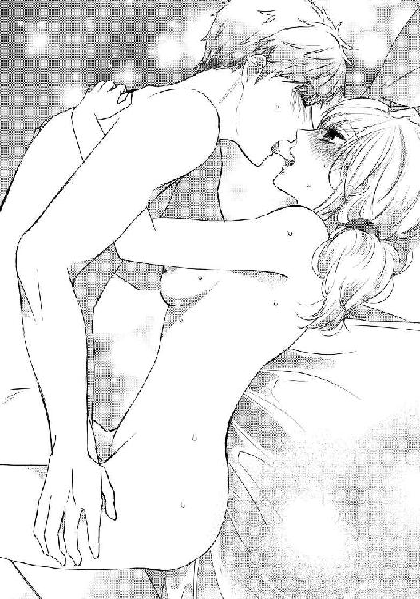

| オタクな幼なじみを一皮むいたら、S系ダーリンが出てきたんですけど!?【イラスト入り】 (無敵恋愛S*girl) | |
| 黄田原秋生 | |
| 株式会社 ぶんか社 (2018) | |
株式会社 ぶんか社
オタクな幼なじみを一皮むいたら、Ｓ系ダーリンが出てきたんですけど!?
黄田原秋生・著
幸姫ピチコ・イラスト
※本作品の内容はすべてフィクションです。
実在の人物・団体・事件などには一切関係ありません。
春の日差しが差し込む自室のベッドの上。私は思う存分、惰眠をむさぼっていた。
『──ほら、おむかいの、寺内さんちのおねえさんよ、千里。ごあいさつは？』
夢を見る。昔の、夢だった。
『......ちさと、です。こんにちは』
『ももかだよ！ しがつからいっしょのようちえんだね、あたし、こんどからねんちょうなんだ』
母親の後ろからおずおずと顔を出す幼稚園くらいのかわいい子が、緊張しながら、大きなうるんだ瞳で私の顔を見上げてあいさつをしてくる。お姉ちゃん面をして、得意げにあいさつを返したのを、まだ覚えていた。
（......懐かしいな）
半分覚醒しながら、私はそんなことを考えていた。幼いころの私の思い出だった。初めて千里と会った時の、夢。
（チサ、かわいかったな......、初めは女の子だと思ってたんだよね......）
「......桃香！ もーもか！ まだ寝てるの？ もう十時よ、いくら美容院が休みだからって寝すぎでしょ！」
そんな私のまどろみは、起こしにきた母親の大声で中断されてしまった
「もー、うっさーい...... 起きようとしてたのにぃ......」
「ほら、お布団干しちゃうから下に行って！ あと、畑から新じゃが穫ってきたから、柳原さんとこにおすそ分け行ってきてよ」
「めんどくさいなぁ......、ママ行ってきてよ〜」
私の言葉に、母親が顔をしかめて返してきた。
「なんでママが行くのよ、あんたら付き合って何年よ〜？」
「もう四年でーす！ はいはーい......」
二十六歳なんていう、微妙な年頃の娘の部屋にずかずかと入り込んできた母親は、私の掛け布団と毛布をひっぺがしてベランダに持っていってしまった。いくらもう春とはいえ、パジャマだけではさすがに肌寒い。私はあくびをしながらリビングに下りて、テーブルの上のバナナを一本頬張った。
ここは東京まで車で二時間。微妙に栄えているようなそうでもないような地方都市の、そのまた郊外の静かな住宅地だ。幹線道路沿いにはいろんなチェーンの量販店や飲食店が軒を連ね、最近できたショッピングモールは、休日は駐車場待ちの渋滞が起こるほどに、周辺から買い物客が押し寄せる。車さえあれば、生活をするのになんの不便もない。我が家のように家庭菜園ができるほどの広い庭付きの戸建だって、都会とは比べ物にならないくらいのお手頃な値段で売りに出されている。私、寺内桃香はこの片田舎で生まれて健やかに育ち、近所の幼稚園から近所の公立の小中高に通い、やっぱり近所の美容専門学校に通って、車で十分程の近所の美容院に勤務してしまっている。
（世界が、狭いなあ）
そんなことを考えることもあるのだけれど、付き合っている彼氏ですら、幼なじみの、斜め向かいの家の次男坊で済ましてしまっている。
彼氏の名前は柳原千里、二十四歳。二年遅れで同じ幼稚園から私と同じ小中高に通い、私と一緒で実家から出る気配もない。お互いに狭い世界のまんま、手近なところで付き合っているんじゃないんだろうか。今の関係に大きな不満はないけれども、私は言いようのない息苦しさを感じたりもしていた。
「チサ〜、いる〜？」
田舎の気やすさで施錠もされてない、向かいのお屋敷の重たい玄関ドアを押した。もうすっかり昼時になっていたけれど、千里はよく徹夜で何かしているようで、生活が不規則だ。私には理解できない、萌え系というのか、アニメっぽい女の子の絵とかを描いてお金をもらったりしてるらしい。私の千里の仕事に対する知識はそれぐらいだった。漫画はたまに家にあるのを読んだりするくらいで、アニメもほとんど見ない。ゲームもひまつぶしにたまにパズルゲームをするくらいだし、どちらかというと趣味はドライブとか、みんなで集まってのバーベキューや球技とかで、アウトドアの方が好きだった。千里は私とは真逆のまったくのインドア趣味で、ほっとくと二、三日家から出てこなかったりする。
「おじゃましまーす、っと」
勝手知ったる他人の家だ。無人のリビングに上がり込み、私は持たされた、新じゃがの入った段ボールをテーブルに置いた。それと同時くらいに階段を降りる足音が聞こえて、千里がのっそりとドアから顔を出す。
昔は女子と間違えるくらいかわいかった千里も、二十四歳になった今は身長も百八十センチを超えて、ジャージのズボンのまくり上がった裾からのぞく脛は体毛でもしゃもしゃだった。色白なのは相変わらずだが、それはそれで無精髭も目立つし、伸ばし放題のカラーも入れてない真っ黒の髪を邪魔そうにかき上げる様子はオタクくさくて、私は顔をしかめてしまった。
「も〜また無精髭だし。あと髪も切りなよ、私やったげるからさぁ〜」
「ふあぁ......。おはよぉ、桃ねぇ」
私の小言を聞き流して、あくびをしながら昔からの呼び方で千里があいさつしてくる。黒縁眼鏡の奥の瞳はまだ眠そうで、起きたばかりなのがよくわかる。
「おはよ、ってもう昼じゃん。ほらこれ、新じゃが。おかーさんが持ってけって」
自分もほんの三十分くらい前に起きてるくせにそれを棚に上げて、私は嫌味を言ってしまう。リビングのテーブルの上の段ボールを指し示すと、眠そうだった二重のまぶたがはっきりと開いた。
千里の顔立ち自体は悪くない、と思う。目は小さい頃と同じように、女の子みたいな大きな二重で、鼻筋も通っていて背だって高いし、何の運動もしてないくせにそこまでガリガリでもないし、肩幅は広いし、手足が長くて頭が小さい。おしゃれに一切構わない千里だったが、あまり不潔感がないのも元がいいからなのではと、彼女の欲目かもしれないが、私はそう思っていた。
「お、新じゃがかぁ、うれしいな。おばさんの野菜ほんっとうまいし。桃ねぇさぁ、飯まだならこの前もらった春キャベツ、桜エビと一緒にスパゲッティにするけど食ってく？」
「......食べる」
千里はニコニコしながら新じゃがを受け取り、野菜庫にしまっていく。その笑顔は幼ささえ感じさせて、私はさっきまで見ていた夢を思い出してしまった。
ただの近所の幼ななじみだった私たちが、男女の関係になったのは四年前、千里の成人式の、その日だった。成人式の後、高校の同級生たちと初めてお酒を飲んだ千里は泥酔してしまったようで、連絡をもらった私が迎えに行く羽目になり、部屋まで送っていったところ押し倒されて、そのまま今に至っている。
「はー、キャベツ甘いな！」
「おいしいね、あんたほんと、ご飯上手だよね」
「いやいや、これも寺内家の畑のキャベツがうまいからっすよ〜」
冗談めかして笑う千里は、もう無精髭もそってさっぱりしたせいか、なんとなく昔の面影も浮かんで、かわいらしく見える。千里が手早く作ってくれたスパゲッティを食べながら、そのおいしさに素直に感心してしまう。千里の両親はセミリタイヤとかで、二年前に伊豆諸島のどっかの島に移住していったし、八歳離れたお兄さんは東京に勤めていて、この大きな家に千里は一人で住んでいる。でも若い男性の一人暮らしとは思えないくらい、家は毎日きれいに片付いているし、作ってくれるご飯もおいしい。
（私、餌付けられているのかもしれない......）
そんなことも考えてしまうくらい、千里との交際は楽で、気取らなくてよくて、順風満帆で、ご飯もおいしくて、両家の家族にも公認で、でもその反面、恋愛につきものの『トキメキ』は、まったくと言っていいほどなかった。
（好きなのか、って言われたら好きなんだけど......）
そう、交際のきっかけの、押し倒された事件を思い出してみても、私はあの時、全然イヤじゃなかった。どちらかというと、これでやっと千里とちゃんと付き合えるんだな、なんてうれしかったような気持ちもあった。二人が彼氏と彼女になった、とお互いの家族に報告した時も、お母さんからは『あんた達、まだ付き合ってなかったの？』と、斜め上の反応をされたぐらいだった。
「......今日さ、私お店休みだからさ、どっか行かない？ 桜まだ咲いてるとこあるよ」
「あ〜、悪い、パス。明日の朝までに、ラフ画を送らないといけない仕事あってさぁ」
「そっか......、仕事、がんばってね」
私からのデートの誘いも、千里はあんまりノッてくれない。特にここ半年くらいはそれが顕著だ。仕事が忙しくなったのか、毎週のように締め切りとやらに追われていて、ぜんぜん余裕がないように見える。
「ごめん！ ......そうだ、あのさ、こんど桃ねぇのお店で髪カットしてくれよ」
しょんぼりとうつむく私に、スパゲッティを飲み込んだ千里が、慌てたように声を掛けてくる。
「え？ いいの？」
職業柄、千里の伸ばしっぱなしの髪が気になって、見るたびに「ウチの店で切りなよ」なんて声掛けをしてたけど、いっつも何か理由をつけては拒否られていた。なんでも千里は、『美容院』という空間に気後れするらしい。「あんなとこ、リア充の巣窟だろ」なんて、よくわからないことを言ってくる。半年に一度くらい、千円均一の、カットのみの床屋に行っては適当に切られて、それからまた伸ばしっぱなしにする、なんてことを続けていた千里がウチのお店に来たいなんて、どういう風の吹き回しなのだろう。
「なんかさ、今度さ、俺、画集出してもらえるみたいでさ、東京行って、出版社の偉い人とも会わなきゃいけないみたいなんだよな〜」
「えー、いつも東京で、即売会だっけ？ なんか本とか売りに行く時は、全然気にしないのに？」
年に二、三回、千里は私にはよくわからないけれど、自分で作った本を売りに、東京まで行く時がある。なんの本か見せてって言っても、「エッチなやつだから見せられないよ！」なんて頑なに秘密にされている。私なんかは田舎者のせいか、せっかく東京に行くんだから、もっとおしゃれすればいいのに、なんて思うのだけれど、千里は「どうせ俺のことなんか誰も見てないから」と笑って、いつもの髪型と適当な服装で出かけていってしまう。
「あ〜、アレは違うんだって！ 俺のことなんか誰も見ない空間だし。とりあえず、明日以降で桃ねぇの予約入れさせて」
「りょーかい！ 予約埋まってるか見て、また連絡するね」
千里と私はほぼ同時に食べ終わり、空いたお皿をさっと千里が片付けてくれる。こういう家事力が高くて気が利くのが千里のいいとこだと思うし、トキメキがないながらも交際を続けている理由だ。結婚するには最高だと思うんだけど、その反面、こんな狭い世界の中で決めてしまってもいいのかと、そんな気持ちも湧き上がってくる。
「......あとこれ」
千里が冷蔵庫から、白い何かが入った容器を取り出し、渡してくれる。
「おばさんからもらったカブをさ、八角と鷹の爪で中華風の酢漬けにしといたんだ、前作ったやつ。よかったら持って帰って」
「わー、ありがとう！ チサのご飯、ほんとおいしいよね、今日もごちそうさま！」
千里においしいパスタを作ってもらって、好物のカブの中華風酢漬けも渡されて、デートを断られたのも忘れて、私はコロッと機嫌を直してしまった。
（やっぱり、餌付けされてるのかも......）
そんなことを考えつつも、私はなんとなく浮かれながら、容器を抱えてウチに帰っていったのだった。
次の日の午後七時五十分、予約時間の十分前に千里は私の店にやってきていた。
「......こんばんは。予約してた柳原ですけど......」
伸ばしっぱなしの髪と丸まった猫背で、ぼそぼそ言いながら軽く頭を下げる千里は、どっからどうみても地味でさえない男の子で、私はちょっとだけ恥ずかしかった。眼鏡はコンタクトにしていたし、いつも着ているよれよれのジャージ上下ではなく、一応ちゃんとしたジーンズとＴシャツとパーカー姿ではあったけど、やっぱりオタクくささはかくせない。
「いらっしゃいませ〜！」
店長と私と、あとスタイリストの加藤さん、アシスタントの坂巻さんが同時に来店のあいさつをすると、千里はなんとなく居心地が悪そうに肩をすくめて会釈する。
「寺内くんの彼氏さんだよね、ようこそ！」
そんなことを冗談ぽく言いながら、店長がカット椅子に案内する。私は千里の後ろに立って、いつもの定番台詞を言ってみた。
「いらっしゃいませ。カットを担当させていただきます、寺内です。本日はどのようにいたしますか？」
「あの、その、さっぱりと、してください......」
家での様子とは違って、下を向いてぼそぼそと答える千里の頭を両手で挟み、私は真正面に鏡に向き直させる。
「ほら、前向いて！」
「ははは、寺内くんとこは姉さん女房だっけ？ 柳原さん、尻に敷かれてるでしょ、寺内くん気が強いからなぁ」
鏡を覗き込んできていた店長が笑う。千里が最後のお客さんだし、他のお客さんはもう誰もいないから、接客は気楽なモノだった。
「大丈夫ですよ、桃ねぇ、いや、寺内さんは優しいですし......」
「はーいはい、今日はどうすんの？ 短くするの？ 長さ残して梳くの？」
家での呼び方が出てしまった返答に、私もなんとなく照れながら、千里の伸ばしっぱなしの前髪を乱暴にかき上げた。スタイリストになってもう三年が経つのに、千里の髪を切るのは初めてだな、なんてそんなことを考える。
「ええと、さっぱりさせて、短めで、あとはお任せでいい？」
「それなら、横とか刈り上げようかな。正直、そういう方があんたに似合うと思うんだけど。カラーも明るめのいれるよ」
「うん。好きにしてください。俺、自信ないし。寺内さんのセンスを信じます」
「了解。じゃ、好きにするから！」
とにかく千里はさっぱりさせたいのだろう。横を刈り上げて、トップは長目に残してのツーブロック。カラーに赤系のライトブラウンを入れよう。そう決めて私はアシスタントの坂巻さんに指示を出す。
「坂巻さん、シャンプーお願いします」
アシスタントの坂巻さんは二十一歳の女の子で、去年の春に専門学校を出て、ウチのお店に就職してきたばかりの新人さんだ。今はアシスタントとしてシャンプー全般を任せられている。私も同じ年でこのお店に来たので、昔の自分を見ているようで、危なっかしく思うところもあるが見守るしかない。坂巻さんに千里のシャンプーをしてもらっている間、私は昼間のお客さんのカルテを記入しはじめた。加藤さんは床の掃除、店長は売り上げの計算と、閉店業務をみんなでまとめてやってしまう。
「寺内さんの彼氏さん、イラストレーターなんだっけ？ どんなの描いてるの？」
モップを持ちながら、加藤さんが話しかけてきた。加藤さんは私より二コ上の二十八歳で、ウチの美容室イチ指名が多い売れっ子スタイリストだ。茶髪のいかにも遊び人ぽい軽そうな外見だけれど、三児の父で気さくで明るくて、若いママ客からの支持が厚いタイプだった。
「うーん、そうなんですけど、私、ぜんぜんわからなくって......」
お店の飲み会で恋話になることもあり、そんな時は私は千里の話をしてきた。彼氏の職業がイラストレーターというのはやっぱり珍しく、みんな食いついてはくるのだけれど、私が千里の絵に詳しくないこともあって、うまく説明できないでいる。
「......ＣＭでやってるのとかだと、『星閃のフォーチュン』ってソシャゲに最近は描いてますよ」
シャンプー台から帰ってきた千里が加藤さんの質問に、代わりに答えてくれる。私はそのゲームを知らなかったし、ＣＭも見た記憶があるようなないような、そんな認知度だったのに、他の三人の注目が一気に千里に集まった。
「マジ？ 『星チュン』描いてるの？ 俺、めっちゃ課金してんだけど！ え、どのキャラ？」
「えと、レア度高いのだと『アケルナル』とか描きましたね......」
「えー!! 俺、前のイベでアケルナル狙ってクッソ爆死したんだけど！ すげー！ 絵師じゃん！」
加藤さんは興奮したようで、いつの間にか接客用語も忘れてタメ口で話しかけている。店長に注意してもらおうかと振り向くけれど、店長も千里に近づいて、何やらスマホのゲーム画面を見せていた。
「すごいですね、柳原さん！ アケルナルの絵、描いてらっしゃるんですか？ バンリ先生ですよね？ 俺、この前ガチャで引いて、愛用してますよ〜。強いですよね、彼女！」
「ありがとうございます、使ってくれてうれしいです。おっ、すごいっすね、カンストじゃないですか」
「いいよな〜店長〜、俺もアケルナル欲しかったっすよ、嫁に言えないくらいつぎ込んじゃったっすよぉ......」
「加藤くんは、俺の友軍サポートで使えばいいじゃないか。カンストさせるのにすごい周回したんだから、ありがたく使ってくれよな！」
私には、三人の会話がさっぱりわからなかった。カット用の椅子に座る千里の周りを店長と加藤さんに固められて、近づくこともできない。困ってシャンプー台の方を振り向くと、坂巻さんまで、何か感動したようなうるんだ瞳で、千里を見つめている。
「......さ、坂巻さん、どうしたの......？」
千里に一目惚れしたのかとか、そんなことも思ったけれど、いくらなんでもそれは違うだろう。私の声に弾かれたように坂巻さんは千里に駆け寄って、感極まったようなそんな震える声で質問をするのが聞こえる。
「あ、あの！ アケルナルの絵師さんってことは、し、シリウスとプロキオンも、描いてらっしゃいますよね？」
「あー、はい、オオイヌとコイヌの犬耳兄弟ですね。担当させてもらってます」
その千里の返答に、坂巻さんは息を詰まらせ、鼻を啜り始めた。さすがに店長も加藤さんも驚いて、千里から離れる。
「......あのっ、バンリ先生、ファンです！ い、犬耳兄弟の、バレンタイン衣装、ほんとにありがとうございました！ すごい、キレイでかっこよくて、ラッキーで無課金で引けたんですけど、私、ほんとに泣いちゃって、うれしくて......ふ、冬の新刊も通販で買いました......」
比喩とかではなく、本当に坂巻さんが泣きはじめたことに、私は驚きを隠せない。
「えっ、新刊買ってくれたんですか？ あ、その、ありがとうございます、犬耳兄弟、女性ユーザー人気高いみたいで、うれしいです」
「握手、いいでしょうか......？ あの、すいません、手荒れひどいんですけどっ！ お願いします......」
涙声で坂巻さんが差し出す手のひらを、千里が強く握り返してあげてるのが目に入り、私の中になにかチリチリした感情が湧きおこった。
「......あの〜、まだカットカラーあるんですけどぉ......」
嫌味っぽく言えば、坂巻さんの涙目と視線がかち合ってしまう。
「す、すいません！ プライベートなのにこんなの......」
「いえ、いいですよ。よかったら友軍になります？」
「いいんですか?? お願いしたいです!!」
その千里の発言に、私以外の三人がすぐさまスマホを取り出し、なにやら通信をしはじめた。千里のスマホを覗くと「友軍コードの交換」とかの文字が見えて、私はなんとなく蚊帳の外にいる気分になってしまう。
「......髪、切るからね」
「桃ねぇ、ごめん〜、俺ファンの人と直接に会うのあんまなくって。ってか、美容師さんもソシャゲとかするんすね、リア充だからこんなんしないかと......」
千里の髪を梳きながら、私は無言でカットを始めた。
「いや〜、美容師は隠れオタク多いですよ。一人でできる趣味ないとやってらんないですもん」
加藤さんの答えに、私はそんなもんなのかな、と首を傾げた。坂巻さんは相変わらず感動してるようで、床の清掃をしながらも心ここにあらず、という感じで、上気したままぼーっと千里を見つめている。
（ウソでしょ......、チサってそんなに有名だったの？）
私は相変わらず半信半疑のままで、ハサミの音も軽く、シャキシャキと千里の髪を切っていく。カラーをしている途中で、閉店作業を終えた加藤さんと店長は帰っていったけれど、坂巻さんはシャンプー台の前で固まっていた。
「いいよ、坂巻さんも帰って」
「え！ でも、シャンプーが......」
カラーを流すシャンプーは、確かにいつも坂巻さんにお願いしていた。でも、その時の私は坂巻さんに対しての苛立ちを隠すことができずに、嫌味な物言いをしてしまう。
「......坂巻さん、いくらファンだからってねぇ」
「すいません、すいません！ ......ご、ごめんなさい。あ、あの、失礼します！」
恥ずかしいのか、坂巻さんの顔が真っ赤になって泣きそうな表情になるのが見えた。慌てたように身支度をして帰る彼女の姿が消えて、お店の中は私と千里だけになった。
「桃ねぇ、いじめっ子だ」
ぽつり、と小さく呟く千里に私は唇を尖らせた。
「......あんただって、鼻の下伸ばしちゃってさぁ」
「だって俺、ファンの女の子とか接する機会ほんっとないし、浮かれてもしょうがないだろ。それにたぶん、桃ねぇの思ってるのとは違うよ、彼女」
訳知り顔の千里の態度にもなんとなく腹が立つ。私は無言でカラーの染まり具合を見てから、シャンプー台へとうながした。カラー液を落とし、ブローとセットもして、ついでに眉毛カットもしてみれば、鏡の中には見違えたような千里の姿があった。
（え、こんなにイケメンだったっけ......？）
彼女とは言っても、髪に隠れてない千里の顔を明るいところでまじまじと見るのは久しぶりで、私はなんだかドキドキしてしまう。自分で切っておいてなんだけど、髪色も髪型も千里に似合っていて、地味なＴシャツとパーカーも店に入ってきた時よりおしゃれにすら見えた。
「おー、すっきりした！ カッコいいじゃん、桃ねぇありがと。やっぱ人は髪型が九割だな〜」
「......こんなんでいいでしょ。これからも、ちゃんと美容院で切りなさいよ」
「だねぇ。なんか美容院、リア充ばっかで怖いとこかと思ってたけど、ここなら通ってもいいな！」
ニコニコとうれしそうな千里の笑顔は、以前と変わらないはずなのに新鮮に見えて、足りないと思っていた『トキメキ』にも似た感情が湧き上がってくる。同時に、若い同僚に対応する千里の様子に、苛立ちがつのっていくのを自覚する。
（なんなの、これ......）
その時の私は、自分の、千里への感情の変化に気づかないでいた。
髪を切ってから、千里は明らかに変わっていった。加藤さんや店長とスマホゲーム以外でも交流しはじめたようで、アウトドアへの誘いにも乗るようになっていた。いつの間にか、家の中以外ではだいたいコンタクトになり、着ているものもおしゃれな服が増えて、加藤さんに教えてもらっているのか、コーディネートもどんどん垢ぬけていった。私が知らなかっただけで、千里がイラストを描いていたゲームはとても人気があったようで、お店の、他の従業員ともどんどん会話が増えていくのが、グループで繋がっているＳＮＳから見えてしまう。ゲームやイラストの話題ばかりだったけれど、坂巻さんとメッセージを交わすのもちらちらと目に入ってしまい、気にしないようにしていても、小さな嫉妬心がどんどんたまっていった。
「来週の店休日にさ、国道のとこの河原でバーべーキューするって店長さんに誘われたんだけど、桃ねぇも行くの？ 一緒に行こうよ」
「うーん、私、その日は朝から講習入ってるから無理かな〜」
いつも通り、千里の家で千里の作ってくれた夕飯を食べた後のそんな誘いにも、なんだかイライラしてしまう自分の器の小ささに、さらに落ち込んでしまう。
（私がバーベキューとかデートとかに誘った時には、ぜんぜん付き合ってくれなかったくせに）
これまでのわだかまりが今になって噴き出してきて、不満が抑えきれなかった。
「えー、夕方からもダメ？ 夜は店長さんちで飲みつつゲーム大会なんだけど。ほら、連休の週だし、夜中までたぶん遊んでるし」
「じゃあ、よけいに私はいらないじゃない。千里の好きな趣味で遊んでくればいいよ」
内心の苛立ちを見せないように、にっこりと顔だけ笑って愛想良く千里に返す。千里は私の態度が違うことに気づいているのかないのか、テーブルの上の私の指を軽く握りながら上目使いで聞いてくる。
「......あのさ、桃ねぇ、明日って、早い？」
甘えた声はエッチの誘いだって知っていたけど、こんなドロドロした気持ちを抱えたままそんな気分にはなれなかった。
「ごめんね。まだちょっと生理が終わり切ってなくて、お腹痛いんだよね」
「そっか......。お腹、気をつけてね」
確かにちょっと前までは生理だったけれど、今は出血はもうないし腹痛もない。とっさにウソをついてしまい、罪悪感が湧きおこる。眉根をひそめてちょっと残念そうだったけど、あっさりと千里は手を離してくれた。千里は年の割に淡泊で、セックスについてもあまり執着はないらしく、そこも私にはちょっと物足りないところだった。
「チサも、仕事大丈夫なの？ 最近なんか忙しそうだったじゃない」
「大きめの案件は一昨日に納品したから、ちょっと余裕あるよ。桃ねぇ元気になったら、また遊びにいこ？」
へらり、と笑顔を見せる姿に、私の胸がチリチリと痛む。私は、千里が好きなのだろうか。だからこんなにイライラしてしまうのだろうか。でも、千里だって成人した立派な男性なんだし、交友関係にまで口は出せないと、自分を戒める。
（私だけを見てほしい、とか、そういうのなのかなぁ......）
千里と付き合ってきた中で初めての、『独占欲』という感情に私は戸惑い、受け入れることができていなかった。こんな、今さらやきもちを焼くとかみっともなさすぎる。そんな意地となけなしのプライドが、私の素直な感情を押し殺していた。
次の週の店休日、私は朝からカットの講習会を受けていた。千里は誘ってくれた通りに店長達と河原に遊びにいったらしく、楽しそうにバーベキューやバドミントンなんかをしている画像が、何件かスマホに届く。
（坂巻さんも来てるんだ......）
講習会の空き時間、ＳＮＳをチェックしながら、私は不安になる自分をごまかせないでいた。お店の集まりなんだから坂巻さんがいるのは当たり前なのに、画像の背景の彼女の姿がやたら目についてしまう。気にしすぎちゃいけない、なんて自分に言い聞かせるけれど、心の中がざわついてしまう。ざわつく気持ちを抱えたままでは当然、集中なんかはできず、せっかくの講習なのに私は気もそぞろになってしまっていた。
家に帰ってからも、私はやっぱり落ち着かなかった。両親と一緒に夕飯を食べた後、自分の部屋に帰ってからは、うっかり窓から、向かいの様子を何度も確認してしまう。お店は連休だったし、先週の「遅くまで遊ぶ」なんて言葉通り、お風呂から上がって夜のニュースが始まる時間になっても、千里が帰ってくる気配はなかった。
落ち着かない気持ちを抱えたまま、ベッドでスマホを弄っていると、いつのまにか日付が変わっている。さすがにもう寝ようかと思ったその時、外からエンジン音が近づいてきた。起き上がってカーテンの隙間からのぞくと、見覚えのある軽自動車が、前の道に停まっている。
「......アレって、坂巻さんの車だよねぇ」
思わず独り言を口にしてしまう。見ていると、運転席から坂巻さんが出てきて助手席のドアを開ける。開けたドアからは、足元をふらつかせながら千里が降りてきた。どうみても酔っぱらっている千里に、坂巻さんが何かを言っている様子が見えて、私はたまらずに階段を駆け下りて、ルームウェアのまま家の前に飛び出していた。
「チサ！ あんた何してんの!?」
思わず、きつい声が出てしまう。びくりと肩をすくめて、怯えたように私を見る坂巻さんと視線が交錯した。
「あはは〜、桃ねぇ〜」
「あっ、あの、他の人みんなお酒飲んでしまって、私だけ飲んでなくて、ちょうど帰るので送ってきただけで」
緊張感のかけらもなく、私にしなだれかかってくる酔っぱらった千里の体を抱きとめ、私はヘッドライトの光の中の坂巻さんの顔を見た。たぶん、彼女はウソをついていない。私から千里を取ろうとか、そんなつもりもない。そんなことは私でもわかる。なのに、私は渦巻く独占欲と嫉妬心が抑えきれなかった。
「......坂巻さん。送ってくれてありがと。もういいから帰ってね。夜だし、あなたも気をつけて」
静かに言えば、やっぱり坂巻さんは泣きそうな顔で、二度ほどおじぎをして車に乗って走り出していった。軽いエンジン音が夜の道に響いて、やがて聞こえなくなる。
「チサ、起きて。部屋行くから」
私を後ろから抱きしめたまま動かなかった千里が小さくうなずき、フラフラ玄関へ歩きだす。危なっかしい足取りを支えつつ、私も千里と一緒に二階の部屋へと向かった。
部屋の電気をつけると、千里は酔っぱらったままベッドに座り込む。私は何回も来ている千里の部屋を見回した。高校生の頃と変わらず、整然とマンガの単行本とアニメキャラのフィギュアが壁一面に収納されていて、大きなモニターと高そうなパソコンが、広い作業机の上に置かれている。一目でオタク趣味の部屋だとわかる千里の部屋は、多分、同じ趣味の人が見たらすごいんだろうな、などといつも思っている。
「桃ねぇ〜、俺のかばんにスポドリあるからぁ、とって？」
千里の甘えるような声に答え、私は持ってきた千里の肩掛けかばんをあさり、スポーツドリンクを手渡した。そのペットボトルを一気に半分ほどを飲み干して一息つく千里の隣に、私は腰を掛ける。
「飲みすぎないでよ、あんた弱いんだから」
「ん〜、大丈夫だいじょーぶ、今日も送ってもらったし」
送ってもらった、の言葉に、私はさっきの坂巻さんを思い出して眉根を寄せる。
「......坂巻さんに、ちゃんとお礼言っておきなさいよ？」
「はーい！ まっきーいい子だよね〜、俺のめっちゃファンでさ〜、こっそり画集出ること伝えたらすっげー喜んでさ、車でもめっちゃしゃべっちゃったよ」
なれなれしい愛称まで使った千里の言葉が、私の苛立ちを瞬間的に沸騰させた。
昔から考えていたのだ。千里がオタクの趣味を持っているのはもう昔からで、それは動かしようがなくて、そういう方向の趣味が全然理解できない私より、理解できる新しい女の子が千里にはふさわしいんじゃないか、その方が千里には幸せなんじゃないか。
「そんなにいい子なら、坂巻さんと付き合えばいいんじゃない？ 私、千里の趣味よくわからないし、坂巻さんとの方が楽しいんじゃないの？」
自分でもびっくりするくらい、とげとげしい乾いた声が出た。私のその声色に、ニコニコしていた千里の笑顔が引いて、急に真顔で見つめ返される。
「......桃ねぇ、別れたいの？」
さっきまでの甘える声とは違う千里の低い声に、私の胸が締めつけられる。違う。別れたくなんかない。髪を切って変わった千里が急に世界を広げていくのを見て、私は悔しかったのかな、なんてそんな風にも考えた。でも、その考えはうまく言葉にならずに、言うつもりもない台詞が溢れ出てしまう。
「べつに。それはチサが決めればいいよ。私は、どうでもいい」
私の言葉に千里の顔が怒ったようにゆがみ、そのあとすぐに泣きそうなる。千里は私と別れたくないんだろうか、でも、私とこのまま付き合うより、坂巻さんと一緒にいた方が千里は楽しいんじゃないだろうか。別れたくないのも、別れた方がいいと思うのも、どっちも本当だった。
「どうでもいい、って、なんなんだよ......」
怒りをはらんだその声に、背筋が緊張する。千里は本当に穏やかで優しくて、普段は怒ったりなんて全然しない。ハンドルを握るとイライラして周囲の車に文句を言う短気な私を、いつもなだめてくれる。そんな千里の滅多にない怒りに触れて、私の心臓が早鐘を打ちはじめる。
「......きゃっ!?」
私の視界が急に薄暗くなる。気づいたら仰向けにベッドに押し倒されていて、腕はまとめて背中側に押さえつけられ、脚には千里の体が乗っていて、どうにも動くのは難しい状況になっていた。
「ちょっ、と！ チサ、止めて!!」
「......やめないよ」
覆いかぶさりながら、千里が私に耳打ちしてくる。耳たぶに熱い息がかかり、怖いとも思ったし、お酒のにおいがするのも感じていた。
「桃ねぇが、悪いんだよ。俺、こんなに桃ねぇが好きなのに。......そうだよ俺、幼稚園の、初めて会った時からさ、ずっと」
すがりつくように言われ、苦しさと切なさに胸が締めつけられる。
（私も、そうだ。あの時からずっと千里のことが、好き）
振り向けばいつも千里がいてくれて、ニコニコと笑って『桃ねぇ』と甘えた声で呼んでくれて、ずっとそれに支えてもらってきたのに。
（別れたくなんて、ないのに）
胸の奥から、本当の自分の、素直な気持ちが湧き上がってくる。ちゃんと、言わなきゃいけないのに、私はそれでも言葉が出せず、千里に抱きしめられながら固まっていた。
「...桃香、絶対に離さないからな」
決意のこもったような、聞いたこともない千里の低い声が、私の耳に響いてくる。千里が長い腕を伸ばし、作業机の引き出しから何かを取り出しているのが、狭い視界の中に見える。カチャカチャとした金属音が耳に届き、手首に何かふわふわしたものが巻かれてしまった。
「やだっ、チサ、これなにっ？」
パチンと手首にハメられたそのフワフワしたものは、背中に回った腕の動きを制限してしまう。
「ファーつきの手錠だよ。食い込まないようにさ、手首に当たるとこにファーがついてて柔らかいんだよ。痛くないでしょ？」
どことなく楽しそうな千里の言葉が、私には怖かった。身を捩ってみるけれど固定されたらしい手首は確かに離れなくて、逃げることができなくなったのを実感させられた。
「やだやだやだ、外してよぉ......！」
「外さないよ。言ったでしょ、俺、絶対に離さないから」
ジタバタと足をばたつかせるけれど、抵抗もむなしく簡単に捕まえられ、パンツごとルームウェアの下をむかれてしまった。下半身だけが裸の頼りない状況に、私の羞恥心が刺激されて体が真っ赤に火照っていく。それでも逃げようと足を振り上げるけれど千里の手が素早く動き、左の足首に何か柔らかいものが巻かれて、パチンという音とともにベッドに片脚を固定されてしまった。
「だめだよ暴れたら、桃ねぇ。次に暴れたら、右足もベッドに繋げちゃうよ？ そしたらもう絶対に動けないし、恥ずかしいとこも丸見えになるしさ、いろいろ変なこともされちゃうかもよ？」
千里の言葉も声もいつものように優しいのに、言っていることはいやらしくて、私の背中に恐怖心が走った。でも恐怖心だけじゃなくて、どこか期待するような、そんなおかしな興奮がお腹の奥の方から湧き上がってくる。
「な、なんでそんなこと言うの、チサぁ......」
かわいい弟みたいな、ちょっとダサくてオタクで、ニコニコといつも優しい、そんな千里はもういなかった。最初の時も、この部屋で酔っぱらった千里に押し倒されたけれど、あの時だってなんだか申し訳なさそうで、初めてだったのを私がリードしてあげていたのに。
「だって、別れようとするから。俺、絶対に桃ねぇと別れてなんかやらないし」
千里はいつもと同じ声でそう言い切ると、私の右脚を無理やりに開く。股間が外気に触れて、粘膜に涼しさを感じる。空いた左手はついでのようにルームウェアをまくり上げ、ノーブラだった乳房が放り出されて千里の目の前に晒された。
（こんなの、チサじゃない）
普段の千里とのエッチは、こんなんじゃなかった。キスをして、ちょっと弄られて、コンドームを使って私の中に挿れて、千里が出す、そんな普通のセックスだったのに、何かがおかしい。
「チサぁ、やだよ、こんなの、おかし、いっ！」
「おかしくて、ごめんね。俺、こういうのずっと、桃ねぇにしたかった。嫌われんの怖かったから、やんなかったけど。......でももう、いいや。我慢すんの、無理」
千里は私の胸の先の尖りを強く吸い、ちゅうちゅうと湿った音を立てながらむしゃぶりつく。痛いのか気持ちいいのかわからない刺激に、私の背中が反らされる。千里の唾液で濡れた乳首を力任せに引っ張られ、私の乳房の形が変わるほどに釣りあげられてしまう。
「おっぱいかわいいね。ほら、すげー揺れてる」
「やだやだ、っ、く、ぅぅぅんっ!!」
涙が出てくる。別れようなんて言ったからいけなかったのか、こんな千里なんて知らない。腰をくねらせてなんとか逃げようとしても無駄で、千里の指先が私の割れ目を撫で上げる。
「ひゃんっ！」
千里の、繊細な指にクリトリスをつつかれて私の体が跳ねた。ぐい、と大陰唇を割り開かれて、まるで観察でもするように千里は私の股間に顔を埋めてくる。至近距離で、女の子の一番恥ずかしい場所を見られている、と思うと、嫌で、恥ずかしいと思う反面、膣の奥からは、どろりした粘液があふれ出す。
「ちさ、ごめん、も、別れるなんて言わないからぁ！ 許して、見ないでよぉ、見ないで......っ」
恥ずかしくてしようがない。私の必死の懇願も、千里の耳には届いてないようで冷たい声が放たれた。
「なんかさぁ、桃ねぇのココ、めちゃ濡れてるんだけど。もしかして、無理やりヤラれる方が好き？ とか？」
「ち、違う、ちがう、ってばぁ！」
図星を突かれた私は、千里から逃げようと必死に自由な右足を蹴るけれど、抱え込まれて、逆に腿の付け根を限界まで開かされてしまう。
「すっげぇ、俺が見てるだけなのに、桃ねぇのエロい穴ぴくぴくしてるし、奥からどんどん濡れてくるんですけど」
「言わないでよぉ、おねがい、ちさ......」
涙がにじんでくるけれど、これはもう怖いとかそんな涙でなくて、自分が興奮してるからなのだ。私ははっきり自覚した。いやらしいところを見られるだけで、私は濡れてしまう。もっと見てほしい、でも恥ずかしい。そんな反対の感情を処理しきれなくて、私はぎゅうっと目を瞑る。
「......これならローション、いらないなぁ」
何を、と薄目を開けて少し顔を起こして千里の手元を見ると、見たこともない大きさの、ピンク色のオトナの玩具が私の秘裂をなぞっていた。千里のソレとは違う冷たいその玩具の尖端が、私の膣口に今にも侵入しそうに強く押し付けられる。
「えっ!? ちさ、それ、ぇっ、なに、なんで、やだやだいれちゃ、あっ！ だめえぇ......」
「......ん？ これ？ ほら俺、エッチな漫画描いてるじゃん？ そんでこーいう手錠とか、バイブとか、資料で通販したんだけどさ、桃ねぇにも使ったげようか、と思って」
ニヤニヤと唇を歪めて笑顔を浮かべながら、そのピンクの玩具で千里は濡れた入口をこじ開けてくる。
「あー、入っちゃうなぁコレ。無理やりヤラれるのが大好きな桃ねぇに、オシオキしてあげないと、ね？」
いつもの千里とは違う下品なセリフを囁かれ、それでも私は興奮していた。さっきしゃぶられた胸の先がジンジン痛くて、切ない気分に体をくねらせる。
（オシオキされちゃうんだ、無理やりに縛られて、エッチなオシオキされちゃうんだ......）
そんな言葉が浮かんで、私の息が大きく弾む。今までの、普通のエッチしかしてこない淡泊な千里はもうどこにもいなくて、でも、それでも私はうれしかった。
「く、ふ、ぅぅん、んんんっ！ ん!! おっき、いの、やだぁ......!!」
硬くて大きい性具が私の膣壁を無理やりにこじ開けながら、ズブズブと体の奥深くまで潜り込んでくる。見下ろしてる千里も興奮しているみたいで、目を細めながら私の反応を探っているみたいだった。ガツ、と根元までを埋め込まれると圧迫感に息ができない。
「ち、ちさ、ぁ、ダメ、これぇ......許して、ゆるしてよぉ......」
途切れ途切れの苦しい息の下から、哀願するように声を絞り出せば千里の嗜虐心を刺激したようで、悪い笑顔を浮かべてくる。
「ダメだよ、抜かないよ。オシオキなんだからさ。ほら」
「ひゃう!? う、うぁあっ、やだやだ!! これ、とめてくださ、いっ！ ひゃああっっん!!」
スライダー式のスイッチが滑る、カチカチという小さな音と同時に、低いモーター音が私の下半身を震わせた。千里がバイブレーターのスイッチを入れたんだ、と一瞬思ったけれど、そんな思考はすぐに快楽の波に流されていく。
「おっ、奥も、かきまわすの、ダメ、これダメだよぉっ!!」
バイブレーターに仕込まれたローターが硬く勃起したクリトリスを激しく震わせ、その刺激だけでも意識が飛びそうなほどに気持ちいいのに、胎内にみっちりと押し込まれた太い幹もゴリゴリと膣壁を抉りながら回転し、私の女性器の全てを暴力的なまでに蹂躙してくる。頭の中がすぐに『キモチイイ』で満たされて、私の喉はいやらしい悲鳴を上げつづけてしまう。
「ん？ 桃ねぇ、もしかしてオシオキなのに感じてるの？ ったくエロすぎだろ？」
「ちがうの、えろくない、これ、っ、ちさがやらしいこと、するからぁ......！」
体を固定されて、膣をグロテスクな玩具で犯されて、味わったこともない快感に私は全身を貫かれつづける。
（きもち、ひっ、これ、だめ、だめ、すぐイッひゃ、いく、いく、いく、いっひゃぅぅ！）
もう、堪えることなんてできなくなっていた。体を拘束されたまま背筋を反らせ、右足を突っ張らせ、歯を食いしばりながらイきそうになる寸前、千里の手が引かれ、私を嬲っていたその玩具が勢いよく抜かれる。
「ひ、ひゃああああっ！ やだ、っ、まだぁ、イってないのにぃ......！ ちさのばかぁ......、ばかぁ......」
「なんだよぁ桃ねぇ、やだとか言いながらさ、こんなんでイクとこだったの？」
「らって、きもちよく、て、お願い、ちさ、入れてよぉ...... イかせてよぉ......」
千里の意地悪な言葉に私は半狂乱になりながら、髪を振り乱し腰を持ち上げソレをねだった。
「だーめ、気持ち良くっちゃオシオキにならないでしょ。別れるなんて言うからさ、いっぱいオシオキしなきゃ」
「もう、別れるなんて、いわない、ちさ、すき、好きなのっ！」
「好き、って俺のこと？ それともコレ？」
千里が笑いながら、私のびちゃびちゃに濡れた入り口を、玩具の尖端でなぞってくる。
「ちさが、千里が好き。えっちなこといっぱいしてくれる千里が、好き、大好きだからぁ......」
頭がおかしくなりそうだった。下品に腰をくいくいと持ち上げながら、私はソレを挿入してくれとねだる。千里は唇を歪めると、手にしたバイブの丸い亀頭を、私のパクパクと開く雌の穴に押し付けて、ゆっくりゆっくり挿入してくる。
「ん。お、おぉ......っ、んぎ、ぎもち、い、すごいの、これぇ......」
「めちゃエロい......桃ねぇ。やっぱ俺じゃなくて、コレが好きなんじゃないの？」
意地悪く笑う千里の言葉に、違う、なんて返したかったけれど、私にはもうそんな余裕は残ってなかった。みちみち、と湿った音を立てつつ侵入してくる巨大な尖端に快楽が引きずり出され、うわ言が口を突いて出る。まるで私自身の膣まで玩具のようにいたぶられる、そんな状況も快楽を増幅させるだけだった。奥まで突き入れられた瞬間に最大までスイッチを入れられて、私はオーガズムの深い淵に叩き落された。
「あ、っ、あああああ!! あっ、あっあっああっ、いくいくいくいくっ、ぅうううう!!」
ギュム、と強く膣肉が引き絞られ、それからは私の体は大きく痙攣し、ただ快楽を与えられ続ける肉人形のようにビクビクと跳ね上がりつづけた。頭の中を直接にかき回されているような強い性感に、思考の全てが蕩けて、嬌声を撒き散らすだけになる。
「はは、イッてる桃ねぇ、かわいい、かわいい......」
千里は私の中に玩具を埋め込んだまま、無防備に揺れる乳房を強く揉みこむ。千里の長い指の隙間でひしゃげる乳房と、挟み込まれ潰される乳首への新しい刺激に、私の快楽は頂点に達して花火のように弾けた。
「ちさ、ちしゃぁ、も、おかひ、きもちよすぎ、おかひく、おかひくなっちゃ、ぅううううっ!!」
「イキっぱなしなの？ いいよ、おかしくなってよ、かわいいよ、桃ねぇ、っ！」
愛液でべとベとに汚れた股間に食い込むバイブを、千里が力任せに揺らす。
「ん、んっ、また、いく、いくのぉっ!! ん、あ、ああああっ!!」
ぶじゅ、と胎内で泡立った愛液が破裂音と共に流れ出し、私の背中が限界まで反らされて、思考が弾け飛んだ。白く拡がる閃光のような快感が、全身を何回も、何十回も通り抜けて、痙攣する筋肉がガクガクと震える。急速に真っ暗になる視界の中、微笑むような千里の顔が一瞬よぎって、私は安心感と共に意識を失っていった。
柔らかい何かが口に押し付けられる感触に、私はまぶたを開ける。縛り付けていた拘束具は解かれ、素裸にされた背中が汗で湿ったシーツに当たって、先ほどまでの痴態を思い出す。
「桃ねぇ...... 好きだ......」
口に押し付けられる柔らかいモノは千里の唇で、私は快楽を与えられすぎてぼんやりと霞む頭で、そのキスを受け入れていた。舌が口の中に差し込まれる感触に、幸せな気分が湧いてくる。ダルい腕を持ち上げて、私は千里の広い背中を撫でる。
「ごめん、桃ねぇ。いや桃香。俺、桃香と絶対に別れたくなくて、頭かっとなって、ひどいことした......」
「......チサの、いじめっ子」
かすれた声で呟けば、目の前の千里の瞳が細められ、また軽く口づけをされる。
「悪かった。なんか酔っぱらってたのもあるけどさ、俺、必死で」
「......いいよ、気持ち良かった、し......」
あんな玩具で弄られて、ひどいことをされて気持ち良かったなんて、恥ずかしかったけど、そう言ってあげると、苦しそうだった千里の表情がゆるむ。
「......千里、私もね、あんたが好きよ。私だって別れたくない。でもなんか、千里がどんどんすごい人になっちゃって、置いてかれるのかなって思ったら、苦しくて。私よりふさわしい女の子がいるなら、そっちの方がいいんじゃって。やきもちも、妬いちゃった」
ごめんね、と呟く言葉は、千里の口の中に吸い込まれる。こんなにゆっくりキスを味わうなんて、何年ぶりなんだろ。そう思いながら差し込まれる舌に自分の舌を絡ませて、唇を甘く噛む。
「......キス、おいしいね」
ぼんやりと言えば、千里がふにゃと表情を崩し、いつもの優しい笑顔を見せる。
「好きだよ、好き、桃香。俺も、今まで仕事のこととか、説明しないで不安にさせて、ごめんな。画集も出してもらってさ、生活も安定するだろし、そしたら結婚して、桃香」
「うん......」
プロポーズされた気恥ずかしさとうれしさに頬が上気して、真っ赤に染まる。千里の顔も真っ赤になって、私達はお互いに見つめ合いながら、胸にあふれる思いにどこか泣きそうにもなっていた。
そんな甘い雰囲気を壊したのは、千里の言葉で、私は思わず笑ってしまう。
「......あ、あのさ、言いにくいんだけど、俺、今日、出してなくて。その、もう一回エッチして、いい？」
「ふふっ、いいよ」
情けなく垂れる千里の眉毛がかわいかった。鼻先にキスをして微笑んであげれば、自信のなさげな千里がぼそぼそと囁いてくる。
「あの、バイブみたいに気持ち良くないかもだけどさ、頑張るから......」
「そんなの、いいのに。ってか、もう一度あんなのされたら、私今度こそおかしくなっちゃうってぇ」
冗談ぽく言うと、千里が安心したように私を強く抱きしめて、胸の谷間に顔を埋めてくる。千里の熱い腕の中にすっぽりと包まれて、私はゆっくりとため息を吐きだした。
「あのね、ああいう玩具で気持ちいいのと、千里がしてくれて気持ちいいの、全然別だからね？」
私の肌を吸う千里の頭を撫でながら、そう語りかけると、また顔が上がってきて唇を奪われた。指は濡れた性器に挿し込まれてぬちぬちと動かされて、ゆるやかな性感に身をまかせれば、腰が蕩かされるように気持ち良くなっていく。
「気持ち、いい？ 桃香......」
すがるような視線に、私の胸の中がじんわりと温かくなった。
「すごい、気持ちいい......大好き、千里......」

熱い塊が押し付けられて、ゆるゆると私の胎内を貫いていく。
（一緒に、なってる）
粘膜と粘膜が直接触れ合う、その感触がたまらない。いつの間にか肌からは汗が噴き出ていて、しっかりと抱き合えばもう、お互いの境目がわからないほどに私たちは溶け合っていた。
「ちさ、と......好き、好き......」
「俺も、桃香のこと好き、愛してる、ずっと......」
激しい性感ではないけれど、一緒になった多幸感に思考が蕩けて、気持ち良かった。何度も子宮口を突かれて、軽い絶頂が続き、そして、奥に千里が出してくれる。生温かく広がる体液のその感覚が幸せで、私は身を震わせて目の前の細い体にすがりつく。抱き返してくれる千里の腕の力に安心感をおぼえて、私達は繋がり合ったまま、ずっとお互いを感じていた。
それから半年後、千里の画集が無事に出版された。
「お〜、すごいね、千里、ほんとにイラストレーターなんだね〜」
「ほんとに、ってなんだよ、桃香......」
本屋さんの店頭で千里の画集を見ながら、私たちは相変わらず仲良く軽口を叩き合っていた。
「ほら、まっきーにサイン入れて持っていってあげなきゃ、バンリ先生！」
上目遣いで見上げながらからかうと、千里は顔をしかめる。
「桃香さぁ、さんざん俺のこと疑っといて、今はそれ？ ほんとに坂巻さんにあげにいっちゃうよ？」
坂巻さんも元気に、ウチの美容院を続けてくれている。最近は簡単なカットも担当しはじめて、なかなか大変なようだったが、そろそろ私が抜けなきゃいけないので頑張ってもらわないといけない。
「いいよいいよ、本妻の余裕だし？」
「ったく......坂巻さんのこと言っとくけど、あいつ、『星チュン』の犬耳兄弟萌えの腐女子だから！ 俺の絵は好きかもだけど、俺本人のことなんか、かけらも興味ないからね！」
「......そうなの？ よくわからないけど」
やっぱり、千里の言っていることはイマイチよくわからない。でも私はそれでもいいと思っている。趣味が違っても、生活が違っても、仲良く一緒にいられるのが一番いい。
「それより、そろそろ産休とらなくていいのかよ。もう桃香一人の体じゃないんだぞ？」
ちょっと膨らみかけたお腹を撫でて、千里が心配そうにしてくれる。千里は私が妊娠した後は、さらに優しく家庭的になった。家では家事は一手に引き受けて、洗濯も掃除も炊事も完璧にこなしてくれる。勤め先の美容院も、店長に妊娠を相談するととても喜んでくれて、時短勤務に切り替えてくれた。立ち仕事で大変ではあるけれど、体調を見つつこの三カ月ほどは、なんとか仕事を続けてきている。産休育休もとれるようだし、お客さんもママさんが多いウチのお店なら、産後も早めに復帰できるだろう。
「まだ大丈夫だよ。これからも一緒に、頑張ろうね！」
「......そうだな、ずっと、一緒に」
千里の大きな手のひらが、私の指を握りしめて愛おしげに撫でてくる。
幼稚園の頃から、できれば死ぬまで、ずっと、二人で一緒に。
そう心に誓いながら、私はぎゅっと千里の温かい指を握り返していた。
★おわり★
オタクな幼なじみを一皮むいたら、Ｓ系ダーリンが出てきたんですけど!?
初版発行 ２０１８年６月１日
著 者■黄田原秋生
発行人■角谷 治
発行所■株式会社 ぶんか社
〒１０２－８４０５
東京都千代田区一番町２９―６
(C) Akio Kitahara 2018
※本書の一部・あるいは全部を当社の許可なく複製、転載、上演、放送することを禁止します。